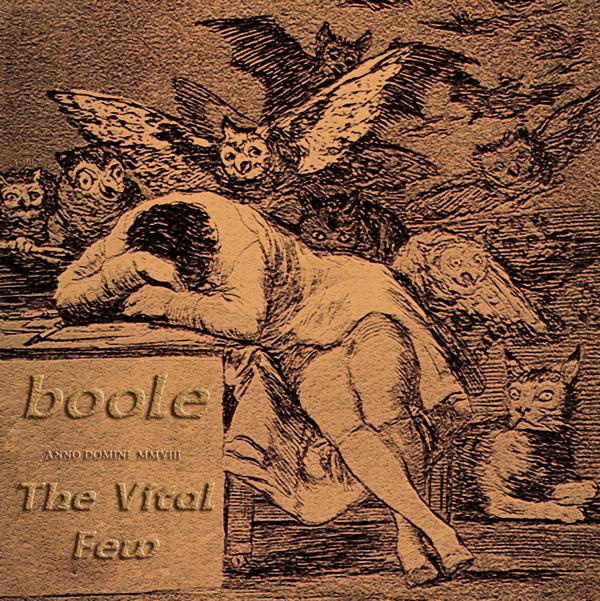

b00le: Our History
Boole is an electronic hybrid act formed in 1996 by Brad Barkett and Mike Barkett at Loyola College in Baltimore, Maryland.
The band was formed as a foray into explorations of post-modern forms of popular dance music, in contrast to Brad Barkett's experimental music project formed in 1990, The Apologizers.
The current live lineup consists of Brad Barkett and Mike Barkett on vocals and saxophones